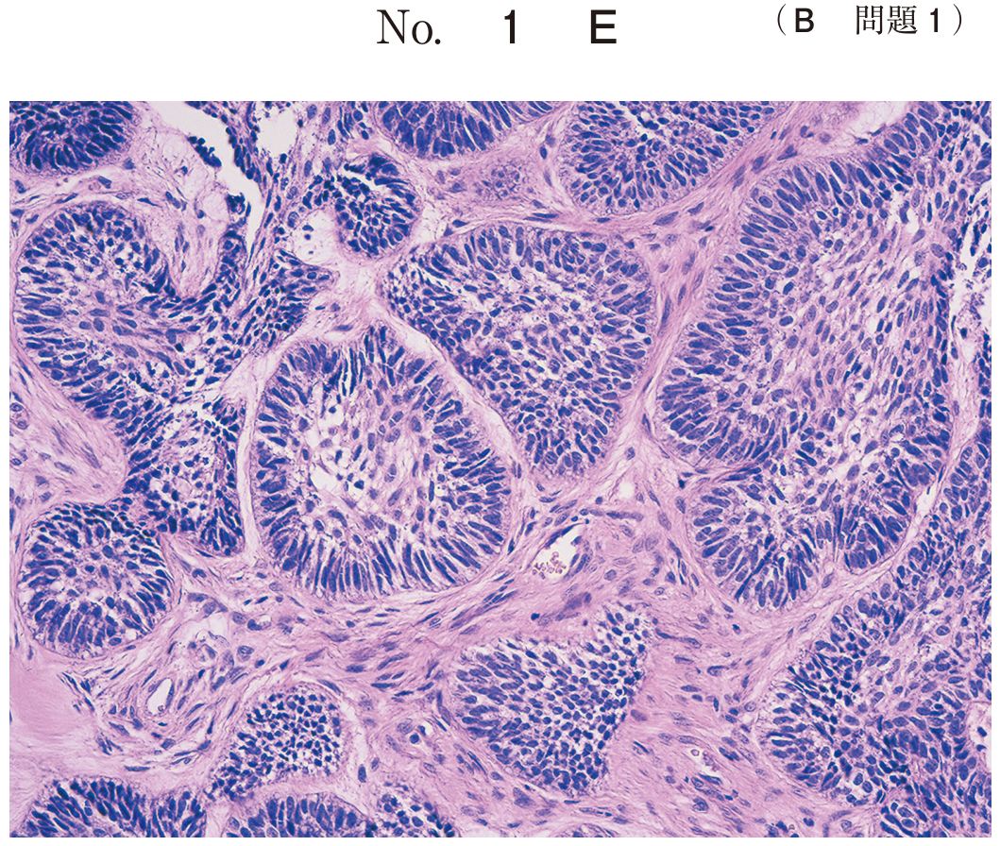
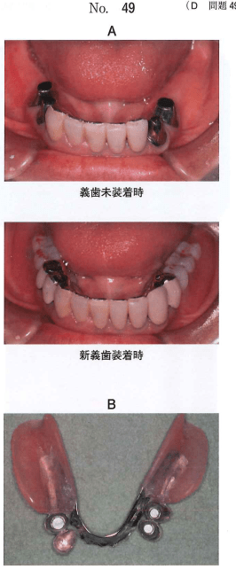
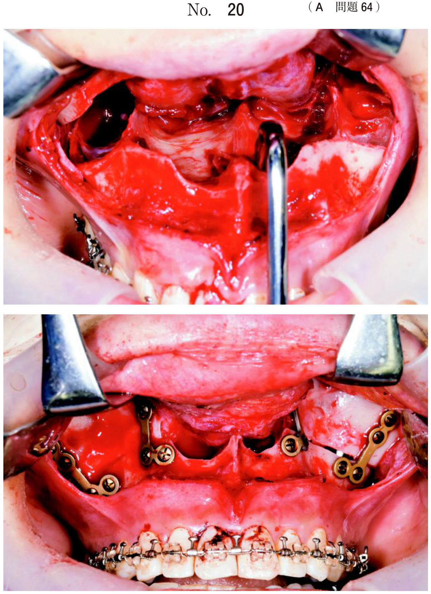

即時義歯とは、抜歯予定歯を模型上で削除し、抜歯と同時に装着する義歯。審美性の維持と機能回復を目的とする。
| 順序 | 操作 |
|---|---|
| 1 | サベイング（着脱方向の決定） |
| 2 | 歯冠豊隆の修正 |
| 3 | 抜去予定歯の削除（模型上） |
| 4 | 人工歯排列 |
| 5 | 埋没・重合・研磨 |
オーバーデンチャーとは、残存歯や歯根を覆う形態の義歯。歯根膜感覚の保存、顎堤の保存、咬合力の負担軽減などの利点がある。
オーバーデンチャーの支台歯には根面板を装着する。根面板周囲の義歯破折を防ぐため：
アタッチメントとは、義歯の維持・支持を得るための精密な連結装置。
| 種類 | 特徴 | 一次固定効果 |
|---|---|---|
| 磁性アタッチメント | MRI撮像時に注意、着脱方向に指向性なし、側方力から保護 | × |
| テレスコープクラウン | 内外二重冠構造、維持力持続、側方力に抵抗 | ○ |
| バーアタッチメント | 複数の支台歯を連結、一次固定効果あり | ○ |
| スタッド（Oリング） | ボール状、繰り返し着脱で維持力低下 | × |
| 連結クラウン | 固定性ブリッジで連結、一次固定効果あり | ○ |
磁性アタッチメント、Oリングは一次固定効果なし
磁性アタッチメントのキーパー付き根面板と磁石構造体の間に挟むレジン製の装置。目的は磁石構造体の変位防止。
顎義歯とは、腫瘍切除などによる上顎または下顎の欠損を補う補綴装置。
舌接触補助床（PAP：Palatal Augmentation Prosthesis）とは、摂食嚥下障害の治療に用いる装置。舌の機能低下を補い、口蓋との接触を容易にする。
開口量が制限される患者（顎関節症、開口障害など）に用いる義歯。義歯を分割して口腔内で連結する構造。
部分床義歯の支台歯において一次固定効果が期待できるのはどれか。2つ選べ。
【解説】一次固定効果が期待できるのは連結クラウンとバーアタッチメント。磁性アタッチメントとOリングは個々の歯に装着するため一次固定効果なし。
82歳の女性。義歯の不安定さを主訴として来院した。義歯の維持を増強する目的で矢印で示す装置を組み込んだ。
この装置の特徴はどれか。2つ選べ。

【解説】磁性アタッチメントはMRI撮像時に注意が必要で、側方力から支台歯を保護できる。着脱方向に指向性はない。
56歳の女性。咀嚼困難を主訴として来院した。検査の結果、下顎義歯を製作することとした。
この装置の特徴はどれか。2つ選べ。

【解説】テレスコープクラウンは維持力が持続し、側方力に抵抗する形態。クラスプより審美性に優れる。
即時義歯装着患者が、装着後4か月目に来院した。痛みはなく食事も問題なく行えていたが、最近食事中にときどき義歯が脱離するという。顎堤粘膜に発赤や腫脹は認められない。
適切な対応はどれか。1つ選べ。
【解説】即時義歯装着後4か月で脱離しやすくなった場合、顎堤吸収により義歯の適合が悪化したと考えられる。リラインが適切。
72歳の女性。上顎右側半側切除後の補綴処置を希望して来院した。上顎前歯部顎堤と下顎前歯部間の開口量は20mmであった。
上顎顎義歯の設計で適切なのはどれか。2つ選べ。
【解説】開口量20mmと制限があるため分割型が適切。栓塞子周囲には軟質裏装材を用いて封鎖性を高める。栓塞子は中空型とする。
76歳の男性。鼻腔への食物流入と上顎義歯が外れることを主訴として来院した。最大開口時の上下顎顎堤間距離が25mmであったため、特殊な構造の義歯を製作した。
この構造を採用した目的はどれか。1つ選べ。
【解説】開口量が25mmと制限されているため、分割型義歯を採用。目的は着脱の容易性。
2種類の有床義歯の写真を別に示す。
29Bと比較した29Aの長所はどれか。2つ選べ。

【解説】29A（根面板のみ）は29B（磁性アタッチメント付き）と比較して着力点を低くできる、維持力の減衰が少ないという長所がある。